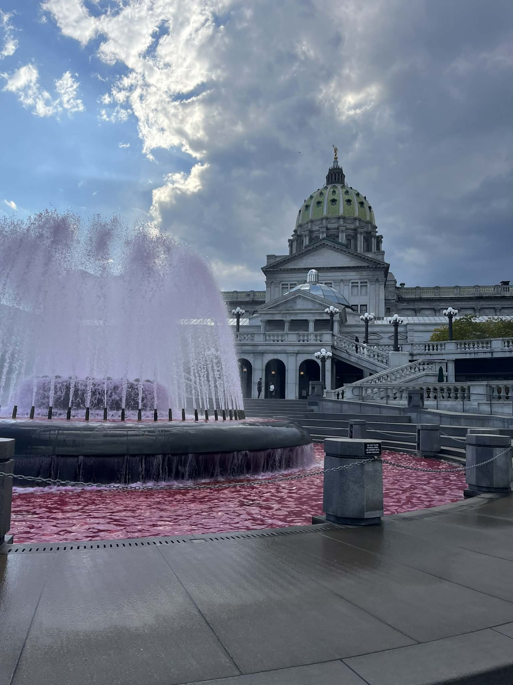

Capitol Fountain

About This Image
The Pennsylvania State Capitol Fountain, often called the East Wing or Veterans' Memorial Fountain. Fountain is dyed pink, this is because during October to mark Breast Cancer Awareness Month. Behind of fountain is Pennsylvania State Capitol Complex.
Why JPG Format?
JPG format works well for this image because it likely contains a wide range of colors and smooth transitions between them, such as gradients in lighting or shading. JPG compression is designed for complex, continuous-tone images, so it can reduce file size significantly while maintaining a visually pleasing result.
Image source: Original photo by Davit Tsikelashvili
Date: 10/21/2025
location: Harrisburg, PA